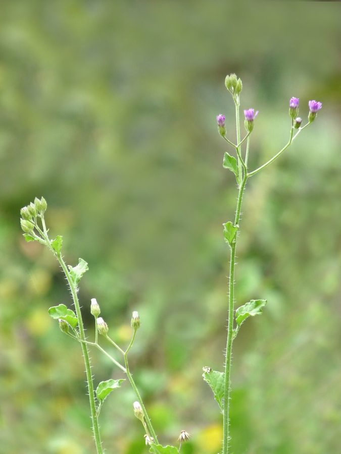

सहदेवीLittle Ironweed
Cyanthillium cinereum · Asteraceae · FLR-0208

- Scientific name वैज्ञानिक नाम
- Cyanthillium cinereum (L.) H.Rob.
- Family कुल
- Asteraceae
- Hindi हिंदी
- सहदेवी
- Local names स्थानीय नाम
- sahadevi, sahdevi, sahadevee, little ironweed
- Status here यहाँ की स्थिति
- native
- Movement आवागमन
- Resident, here all year
- IUCN IUCN
- not evaluated
- Review समीक्षा
- audited and independently read
When to look कब देखें
Present all year. साल भर मौजूद।
Uses and possibilities उपयोग और संभावनाएँ
“Traditional medicine” means a documented traditional use, not a claim that it works. Nothing on this page is medical advice.
Drawn from the documented uses in the profile below, where each is labelled traditional, current or a research lead. All uses →
Tell it apart from इनसे अलग पहचानें
सहदेवी / Little Ironweed
Cyanthillium cinereum (L.) H.Rob. — Asteraceae
सहदेवी — देशभर के गाँवों में ठेठ खरपतवार, लेकिन आयुर्वेद में एक पहचाना हुआ औषधि। सर्दियों में सड़कों के किनारे, खेतों की मेड़ों पर और गली-मुहल्लों में ऊगता है। पत्तियाँ खुरदरी, तना कठोर, फूल नीले-बैंगनी रंग के, छोटे-छोटे, कसैले कड़वे स्वाद की। पारंपरिक दवाइयों में इसे गर्मी कम करने, खाज-खुजली और जख़्मों में लगाया जाता है।
Quick Identification त्वरित पहचान
| Feature | Description |
|---|---|
| Height & Habit | Erect, branched annual herb, 30–80 cm, rough-hairy stems |
| Leaves | Alternate, oblong-lanceolate to ovate, 3–8 cm, harsh to touch, margins toothed or entire |
| Flowers | Small, clustered, blue-purple or violet, clustered heads; disc flowers with 5 lobes |
| Stem texture | Sparsely hairy, quadrangular (square-sectioned) in young growth |
| Roots | Taproot system, penetrating 15–20 cm deep |
Field tip: Look for a compact, weedy herb with rough, opposite or alternate hairy leaves and small purple flowers in heads along the stem. The leaf has a distinctive harsh texture. Rub the leaf between your fingers — rough, not smooth.
Morphology आकारिकी
| Measurement | Range |
|---|---|
| Plant height | 30–80 cm |
| Leaf length | 3–8 cm |
| Leaf width | 1–3 cm |
| Flower head diameter | 0.5–1 cm |
| Seed (achene) length | 3–4 mm |
Habit: Erect annual or short-lived perennial; 30–80 cm; stems angular, greenish, sparsely hairy.
Leaves: Alternate or occasionally opposite; oblong-lanceolate to ovate; 3–8 cm × 1–3 cm; both surfaces with short, harsh hairs; margins entire or coarsely toothed; apex acute; base cuneate.
Inflorescence: Axillary and terminal clusters of small flower heads, sometimes arranged in a raceme-like pattern.
Flower heads: Small, 0.5–1 cm diameter; florets numerous, all disc-type (no ray florets), 5-lobed, tubular, blue, purple, or violet; anthers free.
Fruit (achene): Small, hard, 3–4 mm, dark, slightly ridged; pappus (hair-like structure) forms a crown on the seed.
हिंदी: हर आयु में अलग-अलग दिखता है। छोटा होते समय तने चौकोर, बड़ा होने पर गोल। फूल नीले-बैंगनी, सूजी हुई तरह कसे हुए।
Behaviour & Ecology व्यवहार और पारिस्थितिकी
Cyanthillium cinereum is a pantropical pioneer weed that germinates rapidly on disturbed, compacted soil, especially after field preparation or livestock grazing. The plant tolerates poor, acidic, and alkaline soils equally well. It grows quickly, reaching flowering size in 8–10 weeks. The flowers attract small bees and butterflies; no significant pollination syndrome. The seeds are small and hard, dispersed by adhesion to animal fur and clothing, and by water during irrigation.
The plant's rough leaf surface and secondary metabolites discourage herbivory. It is not palatable to cattle or goats. In field surveys of eastern UP, the species occurs in a mosaic with Prickly Chaff Flower and Bathua, with sahadevi dominating disturbed roadsides while bathua prefers irrigated fields.
हिंदी: नई खुदी ज़मीन में पहले उगता है। गाय-बकरे नहीं खाते। बीज कपड़े से चिपकते हैं।
Life Cycle / Phenology जीवन चक्र
| Month / Season | Event |
|---|---|
| June–July | Seed germination; seedling emergence after monsoon onset |
| July–August | Vegetative growth; rapid height gain |
| August–October | Flowering peak; first flower heads appear; continuous flowering |
| September–February | Fruiting; seed maturation; seed dispersal continues |
| February–March | Plant decline; death as temperature rises; seed bank accumulation |
| April–May | Summer dormancy; soil seed persistence |
हिंदी: जून में अंकुरण, अगस्त से फूल, सितंबर-फरवरी में बीज, गर्मी में मर जाता है।
Agricultural / Human Relevance कृषि और मानव संबंध
Traditional medicine (Ayurvedic and Unani): Sahadevi is listed in classical texts as a cooling (shita) and bitter (tikta) herb. The whole plant, roots, and leaves are used:
- Leaf juice or paste applied to wounds, boils, and infected skin conditions (khaj-khujli); antimicrobial properties documented in modern studies
- Decoction of whole plant used for treating fever; traditionally considered antipyretic
- Root powder mixed with ghee for internal use in treating digestive disorders and inflammation
- Traditional use in treating itching and inflammatory skin diseases well-documented in North Indian folk medicine
No marketed products exist; use remains household and healer-based.
Weed status: A minor field weed; does not damage crops directly but indicates soil disturbance and poor field condition. Easily removed by hand-pulling. No herbicide resistance recorded.
हिंदी: आयुर्वेद में ठंडी, कड़वी दवाई माने जाती है। घाव, फोड़े-फुंसी, खाज-खुजली में लगाते हैं। जड़ को घी के साथ खाते हैं।
Expected Locally स्थानीय रूप से अपेक्षित
Not a field record. Written from published accounts for eastern Uttar Pradesh. No confirmed local sighting yet — if you have seen it, that is what the atlas needs.
अभी तक स्थानीय पुष्टि नहीं। यह विवरण प्रकाशित स्रोतों से है, किसी अवलोकन से नहीं।
Expected year-round on roadsides and field margins throughout Basti district. Peak presence during monsoon and post-monsoon (June to February). Roadsides, irrigation ditch margins, and weedy bunds are places worth checking. The distinctive small purple flowers and rough leaf texture make it identifiable in flower. The first local record would be a photograph with date and location, sent to the atlas.
Distribution वितरण
Global range: Pantropical; native to Africa and Asia; widely naturalized throughout tropical regions including Americas.
In India: Common throughout the country, especially in the Indo-Gangetic plain and Deccan; recorded from sea level to 1,200 m.
In Uttar Pradesh: Widespread across agricultural districts.
In Basti district / eastern UP: Likely common on disturbed roadsides and field margins; not yet confirmed by the project.
Research Questions शोध प्रश्न
Anyone can investigate these | कोई भी इन प्रश्नों की जाँच कर सकता है
- How many seeds does one sahadevi plant produce in a season? / एक सहदेवी के पौधे में कितने बीज होते हैं? — Count flower heads on 10 mature plants; multiply by seed count per head.
- What is the traditional use of sahadevi in your village or by local healers? / आपके गाँव में सहदेवी का क्या उपयोग है? — Interview elders and healers; document preparation methods and ailments treated.
- Does sahadevi growth suppress nearby crops in wheat or mustard fields? — Compare plant density within 30 cm of sahadevi vs. away from it in the same field.
- Which insects visit sahadevi flowers, and for how long? / सहदेवी के फूल पर कौन-कौन से कीट आते हैं? — Observe flowers for 30 minutes at midday; count visits.
- If sahadevi seeds are stored dry for 6 months, what percentage still germinate? — Conduct seed germination trials.
Similar Species मिलती-जुलती प्रजातियाँ
| Species | How to tell apart | हिंदी |
|---|---|---|
| Vernonia cinerea (Ironweed) | Taller (80–150 cm); purple flowers larger and in branched clusters; leaf glossier | बड़ा लोहरा — ऊँचा, फूल बड़े |
| Prickly Chaff Flower (Achyranthes aspera) | Square-stemmed; flowers in elongated reflexed spikes, not heads; fruit sticky | चिरचिटा — स्पाइक में फूल, चिपचिपे फल |
| Bathua (Chenopodium album) | Leaves powdery, not harsh; goosefoot-shaped; flower spikes, not heads | बथुआ — पत्ती पर पाउडर, चिकनी |
Field rule: A weedy herb with rough, hairy, alternate leaves and small purple flower heads (not spikes) that are clustered, rough to touch and bitter-tasting, growing on roadsides, is sahadevi.
Taxonomy & Classification वर्गीकरण
Original description. Originally described as Vernonia cinerea by Carl Linnaeus in 1753. Later transferred to the genus Cyanthillium by Herbst Robinson in 1999. The genus name Cyanthillium is derived from Greek cyan (blue) and anthilion (small flower), referring to the small blue or purple flowers.
Subspecies. Monotypic — no subspecies are currently recognised.
Family and order placement. Placed in the order Asterales, family Asteraceae (daisy family). The family is the largest in flowering plants, with 24,000+ species globally.
Phylogenetic notes. Cyanthillium is a small genus with 7–10 species, distributed in tropical Africa, Asia, and naturalized in tropical America. Cyanthillium cinereum is the most widely distributed species.
IUCN status rationale. Not evaluated. Widespread and abundant; no conservation threats; stable population.
Photo Gallery फोटो गैलरी
No photos yet — add field photos to media/species/sahadevi/ and run node scripts/sync_photos.js.
Photos needed आवश्यक फोटो
- [ ] Full plant on roadside (पूरा पौधा)
- [ ] Flower head close-up (फूल का क्लोज़-अप)
- [ ] Leaf close-up showing rough texture (पत्ती — खुरदरापन दिखाते)
- [ ] Plant with seeds/fruits (बीज वाला पौधा)
References संदर्भ
- Linnaeus, C. (1753). Species Plantarum, Vol. 2, p. 860 (as Vernonia cinerea). Laurentii Salvii, Holmiae.
- Robinson, H. (1999). Revisions in the Asteraceae III: New combinations in Cyanthillium. Phytologia 86(3): 179–188.
- Hooker, J.D. (1881). Flora of British India, Vol. 3. L. Reeve & Co., London.
- Kirtikar, K.R. & Basu, B.D. (1935). Indian Medicinal Plants, Vol. 2. Lalit Mohan Basu, Allahabad.
- Botanical Survey of India. Flora of Uttar Pradesh. BSI, Kolkata.
- GBIF Occurrence Data — Cyanthillium cinereum, India (2020–2026).
Source file: species/flora/weeds/sahadevi.md